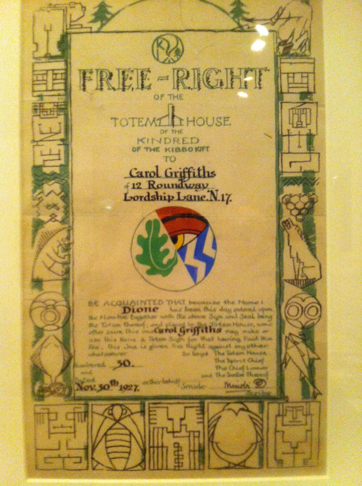

Thursday, January the 7th, 2016
back to: title, date or indexes
For those of you who followed our advent calendar with ever-mounting excitement, and have since become fanatical devotees of the Kibbo Kift, here are some dates for your appointment book. Dr Annebella Pollen, who wrote the book and curated the exhibition, has arranged a series of forthcoming events, to wit:
Wanstead Tap pub, London E7, 26 January
University of Bradford, 27 January
Kibbo Kift study day at Whitechapel Gallery, 6 February
Treadwell's occult bookshop, London 25 February
Evening of Kibbo Kift-inspired music and art, Whitechapel Gallery, 10 March
Talk (as part of children and socialism series), Marx Memorial Library, London, 17 March
Take your totem!
